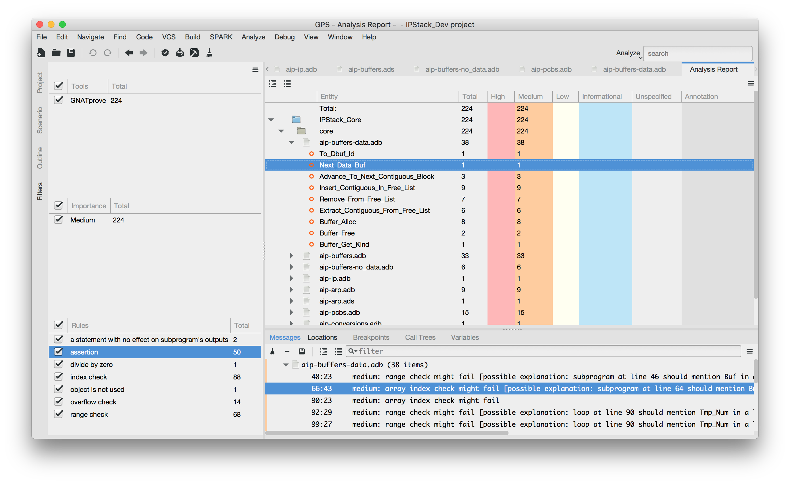

7.2. How to View GNATprove Output¶
GNATprove produces two kinds of outputs: the one which is echoed to standard output or displayed in your IDE (GPS or GNATbench), and a textual summary of the analysis results.
7.2.1. The Analysis Report Panel¶
GPS can display an interactive view reporting the results of the analysis, with
a count of issues per file, subprogram and severity, as well as filters to
selectively view a subset of the issues only. This interactive view is
displayed using the menu . This menu
becomes available after the checkbox Display analysis report is checked in
the SPARK section of the Preferences dialog - menu , and only if GNATprove was run so that there are results to
display.
Here is an example of this view:
7.2.2. The Analysis Results Summary File¶
GNATprove generates global project statistics in file gnatprove.out,
which can be displayed in GPS using the menu . The file gnatprove.out is generated in the gnatprove subdirectory
of the object directory of the project.
When switch --output-header is used, this file starts with a header
containing extra information about the run including:
- The date and time of GNATprove run
- The GNATprove version that has generated this report
- The host for which GNATprove is configured (e.g. Windows 32 bits)
- The full command-line of the GNATprove invocation, including project file
- The GNATprove switches specified in the project file
A summary table at the start of file gnatprove.out provides an overview of
the verification results for all checks in the project. The table may look like
this:
----------------------------------------------------------------------------------------------------------------
SPARK Analysis Results Total Flow Interval Provers Justified Unproved
----------------------------------------------------------------------------------------------------------------
Data Dependencies . . . . . .
Flow Dependencies . . . . . .
Initialization 2100 2079 . . . 21
Non-Aliasing . . . . . .
Run-time Checks 596 . . 480 (altergo 31%, CVC4 69%) . 116
Assertions 3 . . 3 (altergo 33%, CVC4 67%) . .
Functional Contracts 323 . . 168 (altergo 24%, CVC4 76%) . 155
LSP Verification . . . . . .
----------------------------------------------------------------------------------------------------------------
Total 3022 2079 (69%) . 651 (22%) . 292 (9%)
The following table explains the lines of the summary table:
| Line Description | Explanation |
|---|---|
| Data Dependencies | Verification of Data Dependencies and parameter modes |
| Flow Dependencies | Verification of Flow Dependencies |
| Initialization | Verification of Data Initialization Policy |
| Non-Aliasing | Verification of Absence of Interferences |
| Run-time Checks | Verification of absence of run-time errors (AoRTE) (except those raising Storage_Error) |
| Assertions | Verification of Assertion Pragmas |
| Functional Contracts | Verification of functional contracts (includes Subprogram Contracts, Package Contracts and Type Contracts) |
| LSP Verification | Verification related to Object Oriented Programming and Liskov Substitution Principle |
We now explain the columns of the table.
- The
Totalcolumn describes the total number of checks in this category. - The
Flowcolumn describes the number of checks proved by flow analysis. - The
Intervalcolumn describes the number of checks (overflow and range checks) proved by a simple static analysis of bounds for floating-point expressions based on type bounds of sub-expressions. - The
Proverscolumn describes the number of checks proved by automatic or manual provers. The column also gives information on the provers used, and the percentage of checks proved by each prover. Note that sometimes a check is proved by a combination of provers, hence the use of percentage instead of an absolute count. Also note that generally the prover which is run first (as determined by the--provercommand line switch) proves the most checks, because each prover is called only on those checks that were not previously proved. The prover percentages are provided in alphabetical order. - The
Justifiedcolumn contains the number of checks for which the user has provided a Direct Justification with Pragma Annotate. - Finally, the column
Unprovedcounts the checks which have neither been proved nor justified.
After the summary table, a line states the maximal steps that were consumed by automated provers. The line may look like this:
max steps used for successful proof: 1234
The use of this line is to help with reproducability of a run of GNATprove
that proved all checks and properties. If the user provides the given number
via the --steps option to GNATprove, and disables the time and memory
limits, (if enabled directly or indirectly such as via the --level
switch), then GNATprove will again prove all checks and properties. For
example, if a user has proved all checks in a project using an invocation of
GNATprove as follows:
gnatprove -P <projectfile> --level=2
then the following command will also prove all checks:
gnatprove -P <projectfile> --level=2 --timeout=0 --memlimit=0 --steps=1234
The next contents in the file are statistics describing:
- which units were analyzed (with flow analysis, proof, or both)
- which subprograms in these units were analyzed (with flow analysis, proof, or both)
- the results of this analysis
7.2.3. Categories of Messages¶
GNATprove issues four different kinds of messages: errors, warnings, check messages and information messages.
- Errors are issued for SPARK violations or other language legality problems, or any other problem which does not allow to proceed to analysis. Errors cannot be suppressed and must be fixed to proceed with analysis.
- Warnings are issued for any suspicious situation like unused values of
variables, useless assignments, etc. Warnings are prefixed with the text
"warning: "and can be suppressed withpragma Warnings, see section Suppressing Warnings. - Check messages are issued for any potential problem in the code which could
affect the correctness of the program, such as missing initialization,
possible failing run-time checks or unproved assertions. Checks come with a
severity, and depending on the severity the message text is prefixed with
"low: ","medium: "or"high: ". Check messages cannot be suppressed like warnings, but they can be individually justified with pragmaAnnotate, see section Justifying Check Messages. - Information messages are issued to notify the user of limitations of GNATprove on some constructs, or to prevent possible confusion in understanding the output of GNATprove. They are also issued to report proved checks in some modes of GNATprove.
7.2.4. Effect of Mode on Output¶
GNATprove can be run in four different modes, as selected with the switch
--mode=<mode>, whose possible values are check, check_all,
flow, prove and all (see Running GNATprove from the Command Line). The output depends on the selected mode.
In modes check and check_all, GNATprove prints on the standard output
a list of error messages for violations of SPARK restrictions on all the code
for which SPARK_Mode is On.
In modes flow and prove, this checking is done as a first phase.
In mode flow, GNATprove prints on the standard output messages for
possible reads of uninitialized data, mismatches betwen the specified data
dependencies and flow dependencies and the implementation, and suspicious
situations such as unused assignments and missing return statements. These
messages are all based on flow analysis.
In mode prove, GNATprove prints on the standard output messages for
possible reads of uninitialized data (using flow analysis), possible run-time
errors and mismatches between the specified functional contracts and the
implementation (using proof).
In mode all, GNATprove prints on the standard output both messages for
mode flow and for mode prove.
If switch --report=all, --report=provers or --report=statistics is
specified, GNATprove additionally prints on the standard output information
messages for proved checks.
7.2.5. Description of Messages¶
This section lists the different messages which GNATprove may output. Each
message points to a very specific place in the source code. For example, if a
source file file.adb contains a division as follows:
if X / Y > Z then ...
GNATprove may output a message such as:
file.adb:12:37: medium: divide by zero might fail
where the division sign / is precisely on line 12, column 37. Looking at
the explanation in the first table below, which states that a division check
verifies that the divisor is different from zero, it is clear that the message
is about Y, and that GNATprove was unable to prove that Y cannot be
zero. The explanations in the table below should be read with the context that
is given by the source location.
When switch --cwe is used, a corresponding CWE id is included in the
message when relevant. For example, on the example above, GNATprove will
output a message such as:
file.adb:12:37: medium: divide by zero might fail [CWE 369]
Note that CWE ids are only included in check messages and warnings, never in information messages about proved checks. For more information on CWE, see the MITRE Corporation’s Common Weakness Enumeration (CWE) Compatibility and Effectiveness Program (http://cwe.mitre.org/). The current version of GNATprove is based on CWE version 3.2 released on January 3, 2019.
Messages of a specific category or related to a specific CWE can be filtered
inside GPS by typing the desired substring in the search bar of the
Locations panel. For example, search for “CWE” to get all messages with a
corresponding CWE, or “CWE 369” to get all messages related to division by zero
vulnerability.
7.2.6. Understanding Counterexamples¶
When a check cannot be proved, GNATprove may generate a counterexample. A counterexample consists in two parts:
- a path (or set of paths) through the subprogram
- an assignment of values to variables that appear on that path
The best way to look at a counterexample is to display it in GPS by clicking on
the icon to the left of the failed proof message, or to the left of the
corresponding line in the editor (see Running GNATprove from GPS). GNATprove then displays the path in one color, and the values of
variables on the path by inserting lines in the editor only (not in the file)
which display these values. For example, consider procedure Counterex:
1 2 3 4 5 6 7 8 9 10 11 12 13 14 | procedure Counterex (Cond : Boolean; In1, In2 : Integer; R : out Integer) with
SPARK_Mode,
Pre => In1 <= 25 and In2 <= 25
is
begin
R := 0;
if Cond then
R := R + In1;
if In1 < In2 then
R := R + In2;
pragma Assert (R < 42);
end if;
end if;
end Counterex;
|
The assertion on line 11 may fail when input parameter Cond is True and
input parameters I1 and I2 are too big. The counterexample generated by
GNATprove is displayed as follows in GPS, where each line highlighted in the
path is followed by a line showing the value of variables from the previous
line:
{kind=link}
GNATprove also completes the message for the failed proof with an explanation
giving the values of variables from the checked expression for the
counterexample. Here, the message issued by GNATprove on line 11 gives the
value of output parameter R:
counterex.adb:11:25: medium: assertion might fail, cannot prove R < 42 (e.g. when R = 42)
The counterexample generated by GNATprove does not always correspond to a feasible execution of the program:
When some contracts or loop invariants are missing, thus causing the property to become unprovable (see details in section on Investigating Unprovable Properties), the counterexample may help point to the missing contract or loop invariant. For example, the postcondition of procedure
Double_In_Callis not provable because the postcondition of the functionDoublethat it calls is too weak, and the postcondition of procedureDouble_In_Loopis not provable because its loop does not have a loop invariant:1 2 3 4 5 6 7 8 9 10 11 12 13 14 15 16 17 18 19
package Counterex_Unprovable with SPARK_Mode is type Int is new Integer range -100 .. 100; function Double (X : Int) return Int with Pre => abs X <= 10, Post => abs Double'Result <= 20; procedure Double_In_Call (X : in out Int) with Pre => abs X <= 10, Post => X = 2 * X'Old; procedure Double_In_Loop (X : in out Int) with Pre => abs X <= 10, Post => X = 2 * X'Old; end Counterex_Unprovable;
1 2 3 4 5 6 7 8 9 10 11 12 13 14 15 16 17 18 19 20 21 22 23 24
package body Counterex_Unprovable with SPARK_Mode is function Double (X : Int) return Int is begin return 2 * X; end Double; procedure Double_In_Call (X : in out Int) is begin X := Double (X); end Double_In_Call; procedure Double_In_Loop (X : in out Int) is Result : Int := 0; begin for J in 1 .. 2 loop Result := Result + X; end loop; X := Result; end Double_In_Loop; end Counterex_Unprovable;
The counterexample generated by GNATprove in both cases shows that the prover could deduce wrongly that
Xon ouput is -3 when its value is 1 on input, due to a missing contract in the function called or a missing loop invariant the loop executed:counterex_unprovable.adb:7:16: info: overflow check proved counterex_unprovable.adb:7:16: info: range check proved counterex_unprovable.adb:12:12: info: precondition proved counterex_unprovable.adb:19:27: info: range check proved counterex_unprovable.ads:8:14: info: overflow check proved counterex_unprovable.ads:9:14: info: overflow check proved counterex_unprovable.ads:9:14: info: postcondition proved counterex_unprovable.ads:12:14: info: overflow check proved counterex_unprovable.ads:13:14: medium: postcondition might fail, cannot prove X = 2 * X'old (e.g. when X = -1 and X'Old = 0) counterex_unprovable.ads:13:20: info: overflow check proved counterex_unprovable.ads:16:14: info: overflow check proved counterex_unprovable.ads:17:14: info: postcondition proved counterex_unprovable.ads:17:20: info: overflow check proved
When some property cannot be proved due to prover shortcomings (see details in section on Investigating Prover Shortcomings), the counterexample may explain why the prover cannot prove the property. However, note that since the counterexample is always generated only using CVC4 prover, it can just explain why this prover cannot prove the property. Also note that if CVC4 is not selected and generating of a counterexample is not disabled by
--no-counterexampleswitch, a counterexample is still attempted to be generated using CVC4, but the proof result of CVC4 is not taken into account in this case.When using a short value of timeout or steps, the prover may hit the resource bound before it has produced a full counterexample. In such a case, the counterexample produced may not correspond to a feasible execution.
When the value of
--proofswitch isper_check(the default value), then the counterexample gives values to variables on all paths through the subprogram, not only the path which corresponds to the feasible execution. One can rerun GNATprove with valueprogressiveorper_pathto separate possible execution paths in the counterexample.